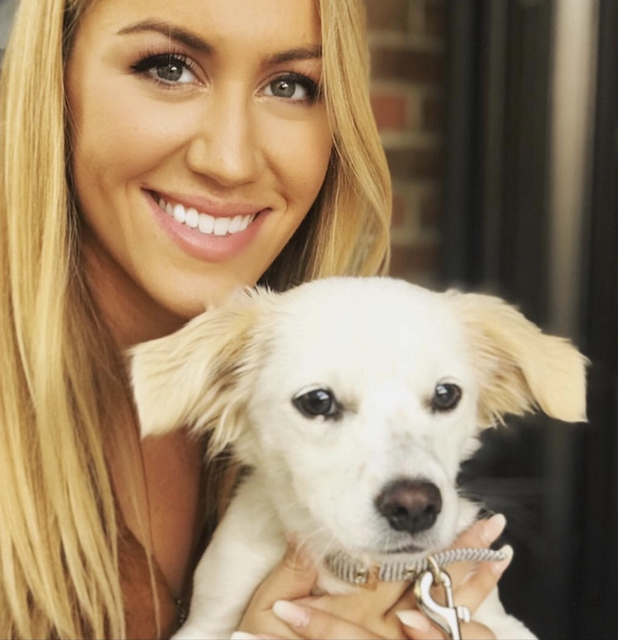

Welcome and thank you for visiting my website! My name is Maria Lara and I am excited to share my journey into the development world with you. This website is my way of showcasing my work, interests, and personality, so I hope you enjoy it.
A little bit more about how I got here:
Born and raised in the Bay Area, I was fortunate enough to be surrounded by a diverse group of people, culture, food, geography, and industries.
I absolutely loved exploring San Francisco via Muni, Bart, and even long runs with my track team.
While in college at UC Davis, I worked in various research labs studying specific proteins and fats that were in breast milk, with the hopes to use this research to ensure infant formulas would provide the closest ingredients possible.
This passion led me to work at UCSF following graduation, where I led a research study called the Development Epidemiological Study of Infants born through Reproductive Technology.
Here, I was able to develop a study website and saw the need for better technology in the healthcare system. After much deliberation, I decided to cancel my MCAT test and completely pivot to a field that
seemed to fit my interests and lifestyle much better: tech.
Luckily enough, I found a job at Streamline that changed my entire life. As the 3rd person on the team for this software, I was exposed to business operations, growth, marketing,
sales, customer success, and development. Over the past few years, Streamline has grown quickly and my skills have succeeded in leading the sales, but I always enjoyed playing with the code and talking
to our developers the most. This year, I turned 27 and decided to take a leap with the UC Davis Full Stack Development Program. I can't wait to learn about the development world and hope to
bring these skills back to Streamline, and, eventually, the healthcare system.
Outside of work and school, you can find me at the gym, hiking with my puppy, Kaya, experimenting with gluten-free recipes, or watching the Real Housewives.
Check out my resume and keep up with my journey here: